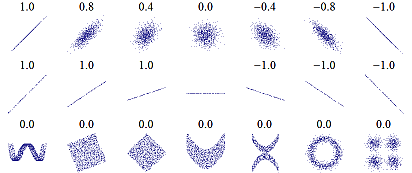

STATISTICS indices
16/05/2017
Combinaisons
Correlations
Correlation between points
- Pearson correlation : test linearity

- Spearman correlation : test monotony

Correlation between matrices
- Mantel test
- Correlation between 2 distance matrices (e.g. : community distance matrix & environmental matrix)
- Significance through permutations of rows and columns
- Significance of the observed correlation = proportion of such permutations that lead to a higher correlation coefficient
- Partial Mantel test
- Correlation between 2 matrices
- Mantel correlogram
- Correlation between 2 matrices, by measuring the correlation between each class of distances
(Mantel test on each distance class)
- Correlation between 2 matrices, by measuring the correlation between each class of distances
## Mantel's permutation test for similarity of two matrices
## 1. Permutes the rows and columns of the two matrices randomly
## 2. Calculates a Z-statistic =
## sum of the pairwise product of the lower triangles
## of the permuted matrices, for each permutation of rows and columns
## 3. Compares the permuted distribution with the Z-statistic observed
library(ape)
mantel.test(mat1,mat2)
## If only 1 variable :
## calculates the simple Mantel r
## If more than 1 variable :
## calculates partial Mantel r by permuting one of the original dissimilarity matrices
library(ecodist)
mantel(mat2 ~ mat1)
## Matrix correlation between two dissimilarity matrices
## Partial matrix correlation between three dissimilarity matrices
## (significance through permutation of the first matrix)
library(vegan)
mantel(mat1,mat2)
mantel.partial(mat1,mat2,mat3)Model evaluation
\(R^2\) (1989 : Cox & Snell)
- Mesure la force de l’association (la taille d’effet) et fournit un indice de l’ajustement au modèle.
- Représente une estimation de la variance expliquée par le modèle.
- Plus la valeur est élevée, plus la probabilité prédite par le modèle s’approche de la valeur observée.
- MAIS n’atteint jamais le maximum théorique de 1 et varie en fonction de la taille de l’échantillon.
\(R^2\) (1991 : Nagelkerke)
Modification du \(R^2\) de Cox & Snell pour obtenir une valeur théorique plus proche de 1.
- Package
fmsb, functionNagelkerkeR2:
\[\begin{align} R^2_{fmsb} &=& \frac{1 - e^{\frac{dev - null}{n}}}{1 - e^{\frac{- null}{n}}} \end{align}\]
- RLeca functions :
\[\begin{align} R^2_{normal} &=& 1 - \left[ \frac{e^{\frac{- null}{2}}}{e^{\frac{- dev}{2}}} \right]^{2/n} \\ \\ R^2_{rescaled} &=& \frac{R^2_{normal}}{1 - \left( e^{\frac{- null}{n}} \right)^{2/n}} \\ \\ R^2_{adjusted} &=& 1 - \left( \frac{n-1}{n-p} \right)\cdot(1 - R^2_{normal}) \\ \\ R^2_{adjusted\text{, }rescaled} &=& 1 - \left( \frac{n-1}{n-p} \right)\cdot(1 - R^2_{rescaled}) \end{align}\]
with :
- \(n\) = number of observations
- \(p\) = number of predictors
- \(dev\) = model deviance
- \(null\) = model null deviance
Area Under Curve (AUC)
- Package
Hmisc, functionsomers2:
\[\begin{align} AUC_{Hmisc} &=& \frac{\overline{\text{rank }_1} - \frac{n_1 + 1}{2}}{n - n_1} \end{align}\]
- Package
PresenceAbsence, functionAUC:
\[\begin{align} AUC_{PresenceAbsence} &=& \frac{n_0 \cdot n_1 + n_0 \cdot \frac{n_0 + 1}{2} - \Sigma \text{ rank }_0}{n_0 \cdot n_1} \end{align}\]
with :
- \(n\) = number of observations
- \(n_0\) = number of observed absences
- \(n_1\) = number of observed presences
- \(\text{rank }_0\) = rank of predictions whose observed values = 0
- \(\overline{\text{rank }_1}\) = mean rank of predictions whose observed values = 1
Boyce index (Hilzer, 2006)
Presence-only data. Spearman correlation
- Predicted to expected ratio :
- predicted = proportion de points d’évaluation qui tombent dans chaque classe
(axis = habitat suitability, probabilité de présence, entre 0 et 1 par exemple)(juste les pixels d’évaluation) - expected = proportion de l’espace qui tombe dans chaque classe (espace = tous les pixels prédits)
- predicted = proportion de points d’évaluation qui tombent dans chaque classe
- Attendu que le ratio soit inférieur à 1 pour les classes proche de 0 et supérieur pour les classes proches de 1, puisque nos données d’évaluation sont des présences, donc on devrait être biaisé vers la droite de l’axe
-> test de spearman là dessus
Variance
VIF (Variance Inflation Factor)
- Detects multi-collinearity (correlation between predictors) in regression analysis.
- Estimates how much the variance of a regression coefficient is inflated due to multi-collinearity in the model.
- Quotient of the variance in a model with multiple terms by the variance of a model with one term \(i\) alone.
\[\begin{align} VIF_i &=& \frac{1}{1 - R^2_i} \end{align}\]
Ranges from 1 upwards :
- The numerical value for VIF tells you (in decimal form) what percentage the variance (i.e. the standard error squared) is inflated for each coefficient.
- For example, a VIF of 1.9 tells you that the variance of a particular coefficient is 90% bigger than what you would expect if there was no multi-collinearity — if there was no correlation with other predictors.
- 1 = not correlated
- Between 1 and 5 = moderately correlated
- Greater than 5 = highly correlated
Importance of variables
Variance partitioning
- Formule du crible / Poincaré : \(V_n = V \left( U_{i=1}^n A_i \right)\)
RLeca generalization :
- Transcription de la formule Poincaré :
somme de toutes les variances des combinaisons à j éléments impairs parmi n,
moins la somme de toutes les variances des combinaisons à k éléments impairs parmi n
\[\begin{equation} V_{n} = \Sigma_{j = 1, 3, ...}^n \left( \Sigma_{c = C_{n}^j} V_{(c)} \right) - \Sigma_{k = 2, 4, ...}^n \left( \Sigma_{d = C_{n}^k} V_{(d)} \right) \end{equation}\]
- Formule récursive :
\[\begin{equation} V_{C_{n}^i, n} = V_{C_{n}^i, n-1} - V_{C_{n}^{i+1}, n} \end{equation}\]
with :
- \(n\) = number of predictors
- \(i\) = predictor index
- \(C_{n}^j\) = combinaison à j élements parmi n
- \(V\) = variance (Nagelkerke \(R^2_{adjusted, rescaled}\))